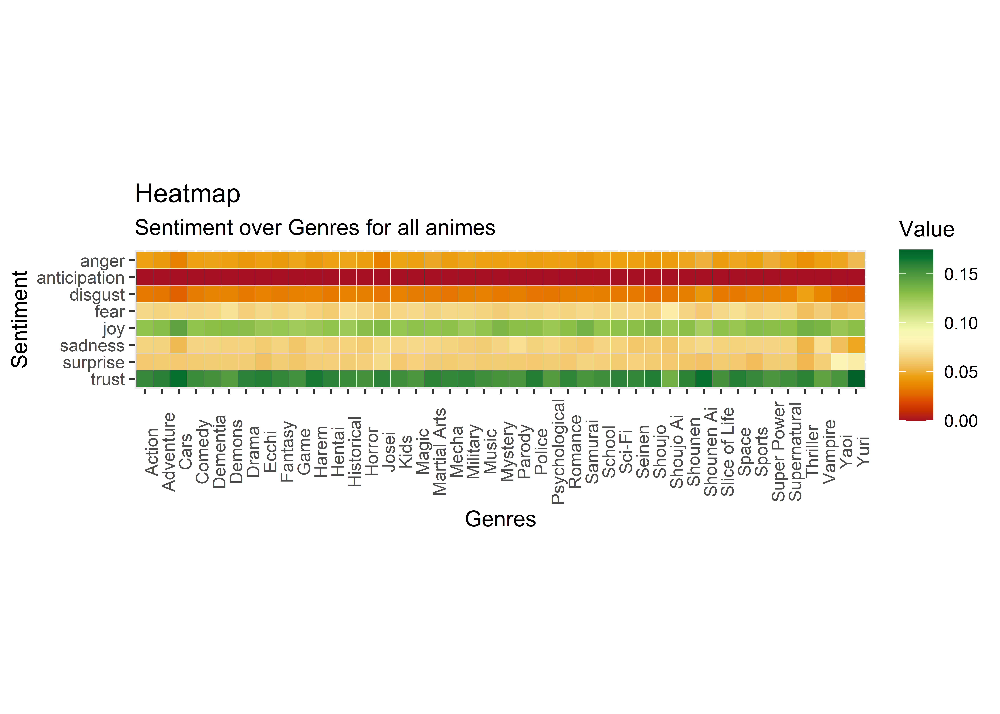
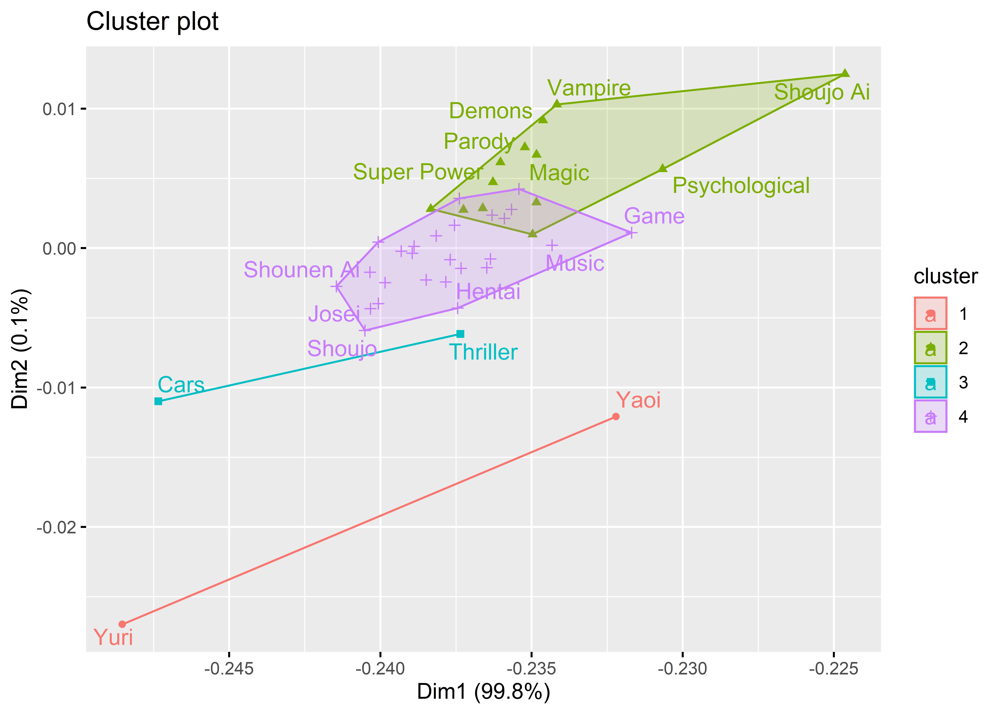

Chapter 5 Results
5.1 Sentiment Analysis
5.1.1 Heatmap
During the data processing part, we apply sentiment analysis using NRC Sentiment lexion. “The NRC Emotion Lexicon is a list of English words and their associations with eight basic emotions (anger, fear, anticipation, trust, surprise, sadness, joy, and disgust) and two sentiments (negative and positive). The annotations were manually done by crowdsourcing.”
We then plot the average sentiment values with respect to different genres of anime to see any patterns of reviews.

We can see some of the interesting patterns:
- From the Sentiment heatmap of animes by genres, we found that most of the animes have the sentiment with trust and joy. Which, are two of the most positive emotions.
- For anime in Advantures, there are more
joyandtrustthan other genres’, and lessanger,disgustandsadness. These make sense since most of the animes belong to this genre tend to give audiences a feeling of excitement and happiness. - For anime in Yaoi, there are more
surprisethan other genres. This also make sense since many of these animes are made by anime lovers instead of original authors. Audiences may feel surprised seeing different stories compared to the orignial ones. - For anime in Shoujo Ai, there are less
trustand morefearthan other genres. This might because many of the audiences are children or adolescents. This type of genre, however, may not be appropriate for those audiences. Reviewers may express their concerns towards these genre.
5.1.2 Cluster Plot
We plot the sentiment cluster plot to see any patterns or cluster among these anime genres. 
- The cluster plot gives us the cluster of emotions of reviewers. As we can see from the heatmap, Yaoi and Yuri has the most change in “surprise” and “trust”. Therefore they are in the same cluster.
- For some genres like Vampire, Demons, Super Power, Magic and Psychological, they are in the same cluster. Which make sense.
- Cars and Thriller change mostly in some sentiment from the heatmap, so they are in the same cluster.
- For some genres like Shoujo, Shounen Ai, Harem and Hentai, they are in the same cluster. These are all some types of animes with small group of audiences.
5.1.3 PCA
Finally we plot the PCA plot.
- From the plot, Yuri, Yaoi, Shounen Ai and Cars are most likely outliers to our dataset.
- The
surpriseindicator is most positively correlated withtrust - The
angerindicator is most uncorrelated withtrust - The
fearindicator is most negatively correlated withtrust